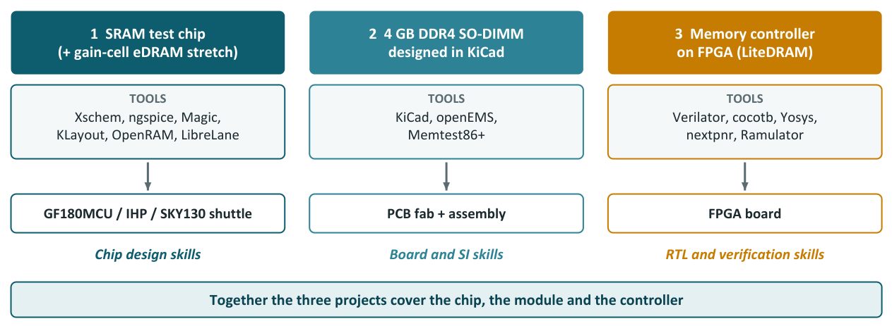
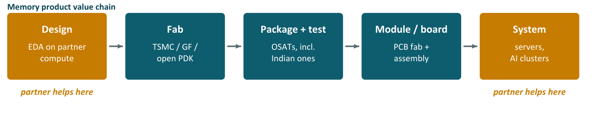

Chapter 17: The Market, and What You Can Build with Open Tools¶
The last chapter of the main text turns from how memory works to where it is sold and what a student or a small company can realistically do. It first sketches the memory market and the companies in it. It then asks the question every student asks, "could I design a 4 GB RAM with free tools?", and answers it with arithmetic: not as a chip, but yes as a module and as a memory system. It describes the most useful open-source project that can really be manufactured, the role a systems partner can play, and finishes with the toolbox, three career paths and a capstone assignment. Figures for market size and cost are rough orders of magnitude for 2025 and 2026.
17.1 The memory market¶
Memory is one of the largest and most cyclical parts of the semiconductor industry: prices swing sharply with supply and demand, and AI has reshaped it since 2023. Check current numbers with analysts such as TrendForce, Yole Group or Gartner.
| Market | Approx. size | Notes |
|---|---|---|
| DRAM (all types) | ~USD 130 billion or more (2025), higher in 2026 | The biggest semiconductor memory market; surged with AI |
| NAND flash (for comparison) | ~USD 65–80 billion | Storage rather than RAM |
| Standalone SRAM | Under USD 1 billion | Most SRAM is embedded inside other chips |
| Emerging NVM (MRAM, FeRAM, ReRAM) | ~USD 1–2 billion | Small but growing |
DRAM revenue by type.
| Rank | Type | Approx. share of DRAM revenue | Trend |
|---|---|---|---|
| 1 | DDR4 / DDR5 (PC and server DIMMs) | ~40% | Steady; server DDR5 strong |
| 2 | LPDDR | ~25–30% | Spreading into laptops and servers (SOCAMM) |
| 3 | HBM | ~20–30% and rising fast | Fastest growing, highest profit per bit, sold out years ahead |
| 4 | GDDR | ~5% | Graphics and some AI inference |
| 5 | Others | Small | Declining |
DRAM revenue by application. Data centres and AI servers (DDR5 RDIMMs, HBM and LPDDR5X) are the biggest and fastest-growing segment, now more than half of DRAM revenue. Smartphones are second by revenue and the largest by number of units. PCs and laptops are third. Graphics, game consoles, automotive and industrial are smaller; automotive is growing as cars gain driver assistance and larger screens.
Who makes DRAM. SK hynix has been number 1 in DRAM revenue since 2025, driven by its lead in HBM. Samsung is a close number 1 or 2 and the largest memory maker overall. Micron is number 3, strong in HBM3E and LPDDR5X. CXMT of China is rising quickly in DDR5 and LPDDR5.
Standard DDR is still the largest type by revenue, LPDDR ships in the most devices, and HBM is the fastest-growing and most profitable. Data-centre memory is where most of the money is going.
17.2 The best open-source route to real RAM silicon¶
If you can use only open-source tools and open processes, what is the most useful RAM project that can actually be manufactured and that industry will value? The recommendation is to design a custom SRAM macro test chip on an open PDK and, in parallel, build an FPGA-based DDR/LPDDR controller project, which needs no fab at all. Together they exercise the circuit, layout, test and RTL skills that memory teams hire for.
| Option | Fabricable with open tools? | Industry relevant? | Verdict |
|---|---|---|---|
| DRAM chip | No: no open DRAM process exists | Yes | Not possible |
| LPDDR6 PHY | No: 130–180 nm open processes cannot reach 10+ Gbps | Yes | Not possible in silicon |
| Custom SRAM macro | Yes: SKY130, GF180MCU, IHP SG13G2 | Yes: every chip has SRAM | Best choice |
| DDR/LPDDR controller RTL on FPGA | Yes: no fab needed | Yes: controller and verification jobs are plentiful | Best companion |
| Compute-in-memory SRAM | Yes | Yes: a hot topic for AI | Good stretch goal |
Choosing an open PDK. A sensible pick is to learn on SKY130, where the tutorials are, then fabricate on GF180MCU or IHP SG13G2, depending on which affordable shuttle is nearest in time.
| PDK | Node | SRAM support | Fabrication route | Best for |
|---|---|---|---|---|
| SKY130 | 130 nm, 1.8 V | OpenRAM most mature; most tutorials | Shuttle services (Efabless shut down in 2025; check current SKY130 providers) | Learning |
| GF180MCU | 180 nm, 3.3 / 5 V | OpenRAM supported | Low-cost pooled runs such as wafer.space; Tiny Tapeout | Cheapest real fabrication |
| IHP SG13G2 | 130 nm SiGe BiCMOS, 1.2 V core | Ready-made SRAM macros in the PDK; OpenRAM support in progress | IHP open-source MPW runs (sometimes free for open designs), Europractice, Tiny Tapeout | Best-quality fab; active European ecosystem |
Fabrication access changes often, so always check current schedules and prices. The cheapest possible first silicon is a small test structure on Tiny Tapeout, at a few hundred dollars per tile.
What to put on the test chip. A good test chip is designed for measurement: every block should answer a question about how the SRAM really behaves in silicon.
| Block | Why include it |
|---|---|
| Custom 1–4 KB 6T single-port SRAM macro | The core skill: your own bitcell, periphery and layout |
| OpenRAM macro of the same size | A baseline to compare against |
| MBIST (March C− algorithm) | Every industry SRAM has built-in self-test |
| Programmable sense-amplifier timing | Measure timing margins on real silicon |
| Separate SRAM supply pin | Measure Vmin, the lowest voltage at which the SRAM still works |
| Ring oscillators | Identify which process corner your chips came from |
| Standalone bitcell and sense-amp test structures | Measure static noise margin and sense-amp offset directly |
| SPI or scan test interface | Easy to drive from a microcontroller or FPGA |
| Stretch: 8T low-voltage cell or compute-in-memory array | Material for a research publication |
The open tools for every stage are those of Section 15.3, with KiCad for the test PCB, Python for the measurement analysis, and Git with GitHub Actions running automated DRC, LVS and simulations as regression and CI.
The FPGA companion project. Study LiteDRAM to see how a real open controller and PHY are organised. Use a Lattice ECP5 board with DDR3 memory (for example ButterStick or OrangeCrab) with the open Yosys and nextpnr FPGA flow. Build a simplified DDR3 or LPDDR4-style controller with a scheduler and refresh, verified with a cocotb testbench. Use Ramulator 2.0 or DRAMSim3 to compare scheduling policies. The FPGA board can then serve as the tester for the SRAM chip when it returns from the fab.
| Phase | Duration | Work |
|---|---|---|
| 0 Ramp-up | 1–2 months | Install tools, simulate 6T SNM, run OpenRAM |
| 1 Circuit design | 3–4 months | Bitcell, periphery, timing; corners and Monte Carlo |
| 2 Layout and verification | 2–3 months | DRC/LVS, extraction, post-layout corners, BIST RTL, test interface |
| 3 Tapeout | 1 month | Integration, final checks, submission |
| 4 While in fab | 3–6 months | KiCad test PCB, FPGA tester firmware, controller project |
| 5 Silicon measurement | 2–3 months | Functional test, shmoo plots, Vmin, access time, leakage, correlation with simulation |
| 6 Publish | – | GitHub release; conference papers (for example VLSI Design or VDAT in India) |
From skills to jobs.
| Skill shown by the project | Matching job |
|---|---|
| Bitcell and periphery design, Monte Carlo, Vmin | Memory circuit design engineer (Intel, AMD, Qualcomm, Arm, Synopsys and Cadence memory-compiler teams) |
| Layout, DRC/LVS, extraction | Custom / memory layout engineer |
| .lib characterisation | Library / characterisation engineer |
| BIST, test chip, measurement | DFT / silicon validation engineer |
| Controller RTL, cocotb or UVM-style verification | RTL / design verification engineer (the largest hiring area) |
| A real shuttle tapeout | A rare differentiator for a fresh graduate |
Many memory design teams are based in India, notably in Bengaluru and Hyderabad.
Honest limits
SRAM on 130 or 180 nm processes runs at roughly 100 to 300 MHz: industry values the methodology and the measurements, not the raw speed. Open DRC and LVS decks are accepted on open shuttles, but industry signoff uses Calibre. Fabrication access (shuttles, prices, providers) changes quickly.
17.3 Can a 4 GB RAM be designed with open-source tools?¶
A common question from students: could I design a complete 4 GB RAM myself with free tools? It depends on what "a 4 GB RAM" means.
| Meaning | Open tools? | Manufacturable? |
|---|---|---|
| A 4 GB RAM chip | No | No: no open DRAM process exists, and SRAM would be far too big |
| A 4 GB module or board using commercial DRAM chips | Yes: KiCad | Yes: any PCB fab and assembly house |
| A 4 GB memory system (your own controller and DRAM) | Yes: LiteDRAM, Verilator, FPGA tools | Runs on a real FPGA board |
The short answer is: not as a single chip; yes as a module built from commercial DRAM chips; and yes as a memory system with your own controller.
Example 17.1: The area maths of a 4 GB chip
Without a DRAM process, the only memory one could build on an open PDK is SRAM. A quick calculation shows why that cannot reach 4 GB.
- 4 GB in bits: \(4 \times 2^{30} \times 8 = 34.4\) billion bits.
- SKY130 6T bitcell area: about 2 µm². With about 60 per cent array efficiency, the area per bit including periphery is about \(2/0.6 = 3.3\) µm².
- Total silicon area: \(34.4 \times 10^{9} \times 3.3\ \mu\text{m}^2 = 1.14 \times 10^{11}\ \mu\text{m}^2 \approx 114{,}000\ \text{mm}^2\), about 115,000 mm² or 1150 cm².
- The reticle limit (the largest single chip a scanner can expose) is about 858 mm² (26 × 33 mm), so \(114{,}000/858 \approx 133\): about 130 or more maximum-size chips.
- A 200 mm wafer has an area of \(\pi \times 100^2 = 31{,}400\) mm², so \(114{,}000/31{,}400 = 3.6\): about four full wafers of pure memory, and the yield of a maximum-size die at 130 nm is low without redundancy and repair.
- Compare a commercial 1β DRAM: its 1T1C cell is about 0.001 µm², roughly 2000 times smaller per bit than the SKY130 SRAM cell. A full 4 GB fits on a single DRAM die of very roughly 60 to 80 mm² (an estimate) that costs a few dollars to make. Array efficiency, the fraction of die area that is actual memory cells rather than decoders, sense amplifiers and wiring, matters as much as cell size.
How much SRAM does fit on open silicon?
| Silicon available | Area | Approx. SRAM capacity |
|---|---|---|
| One Tiny Tapeout tile | ~0.016 mm² | A few hundred bytes |
| A typical shuttle slot | ~10 mm² | ~300 KB |
| A full reticle-size chip | ~858 mm² | ~30 MB |
| 4 GB | – | ~130 times the biggest possible chip |
A realistic silicon target is therefore 1 KB to a few hundred KB, which is exactly what industry SRAM test chips look like anyway.
Option 1 (recommended): a 4 GB DDR4 SO-DIMM in KiCad. You can design a complete, working 4 GB module with open tools by using commercial DRAM chips: four 8 Gbit x16 DDR4 chips (from Micron, Samsung or SK hynix) give 4 GB in a single 64-bit rank (\(4 \times 16 = 64\) bits; \(4 \times 8\ \text{Gbit} = 32\ \text{Gbit} = 4\) GB). Add an SPD EEPROM, decoupling capacitors and termination resistors on a 6 to 8 layer impedance-controlled, length-matched PCB. The tools are KiCad for schematic and layout with length tuning and differential pairs; basic signal-integrity simulation with vendor IBIS models in KiCad's ngspice simulator; optionally openEMS for field-solver analysis; SPD contents written to the JEDEC SPD specification and verified with Linux decode-dimms; a functional test in a laptop or mini PC with Memtest86+; and fabrication files (Gerbers, drill, BOM, pick-and-place) for a PCB fab offering impedance control and BGA assembly. Antmicro has published open-source KiCad designs for DDR4 SO-DIMMs and DRAM test boards, which make excellent references. The difficulty is medium to hard, and a prototype costs a few hundred dollars.
Option 2: a memory system with your own controller. Use LiteDRAM as the reference design, simulate with Verilator and cocotb, explore policies with Ramulator 2.0, and run it on an ECP5 FPGA board with the Yosys and nextpnr flow. The controller design is the same for 128 MB or 4 GB: capacity comes from the DRAM chips, not the controller.
Option 3 (stretch): gain-cell eDRAM on an open PDK. A gain-cell eDRAM uses two or three ordinary transistors (2T or 3T) and stores charge on the gate of one of them instead of on a dedicated capacitor. Like DRAM, the charge leaks and must be refreshed, so you can measure retention time on real silicon, an active research topic. A classic 1T1C cell built with the MIM (metal-insulator-metal) capacitors available on these PDKs is impractical, because the capacitors are far too large.

Together the three projects cover the chip, the module and the controller.
17.4 Working with a systems partner¶
A memory design effort needs more than a fab. A systems partner, such as an Indian server maker that does not make chips, fills two other gaps: compute infrastructure for running EDA tools, and a system partner and customer, so that memory designs reach real servers. It cannot supply fabrication, PDKs or foundry bitcells, EDA licences, DRAM dies, or packaging and chip testing. The current products and capabilities of any named company should be confirmed with the company itself, as with every vendor and product named in this part of the book.

India's ecosystem is growing around the middle stages too: Micron's assembly and test plant at Sanand, Gujarat, and Indian OSAT projects from Tata, Kaynes and CG Semi.
Sizing the compute.
| Project | CPU cores | Big-memory servers | Storage | GPUs |
|---|---|---|---|---|
| Open-PDK SRAM test chip | 64–256 | Not needed (256–512 GB fine) | 10–50 TB | Not needed |
| TSMC N7 SRAM macro / compiler (10–30 engineers) | 500–2000 | 2–4 with 1–2 TB | 100–500 TB | Optional |
| TSMC N7 LPDDR5X / DDR5 controller and PHY (50–150 engineers) | 2000–10,000 | 5–10 with 2–4 TB | 0.5–2 PB | Useful |
| Full memory-centric SoC / AI accelerator | 10,000+ | 10+ with 4 TB | Multi-PB | Yes |
An on-premise, isolated cluster run by a trusted partner can meet the strict security requirements of advanced-node PDKs more easily than a general-purpose cloud account.
Product opportunities.
| Product | What you design | Feasibility |
|---|---|---|
| CXL memory expander card | CXL controller chip (N7 plus licensed PHY) and a card PCB with DDR5 | High |
| DDR5 RDIMM / MRDIMM made locally | Module PCB, SPD, thermal design (DRAM dies bought in) | Very high; the most achievable, no custom chip |
| Memory-rich AI accelerator | Large SRAM or compute-in-memory chip (N7) | Medium; large effort, high impact |
| SRAM compiler IP | Compiler at N7 / GF 22FDX | High; an IP business |
| Memory test / validation platform | Rowhammer, reliability, error-rate and CXL testing on real servers | Very high; low cost, publishable |
| Memory tiering software (DRAM, CXL and SSD) | Linux kernel / runtime | High; software only |
| HBM / DRAM chips | – | Not possible; needs a DRAM maker |
A phased roadmap: phase 1 (0 to 12 months) builds the team and methodology with an open-PDK SRAM test chip, an FPGA controller and a KiCad DDR4 or DDR5 module; phase 2 (6 to 18 months) delivers a first product with no custom chip, a DDR5 RDIMM qualified on partner servers, and a memory test platform; phase 3 (12 to 30 months) targets advanced-node silicon, a low-Vmin SRAM macro or compiler on a TSMC N7 shuttle; phase 4 (24 to 48 months) builds a system chip, a CXL memory expander controller or an SRAM or compute-in-memory AI accelerator. Still not possible: your own DRAM chip (DDR5, LPDDR6 or HBM DRAM dies) or NAND. The realistic route there is partnership with a DRAM maker, since HBM base dies are increasingly co-designed with customers. Programmes such as the India Semiconductor Mission and its Design Linked Incentive (DLI) scheme and the C2S programme support design and tapeout funding.
17.5 The toolbox and where to go next¶
The exercises of this book can all be done with free, open-source tools; the industry uses commercial equivalents, and knowing both helps when applying for jobs. The toolbox is:
| Stage | Tool | What it does | Industry equivalent |
|---|---|---|---|
| Everyday | Python with NumPy, SciPy, Matplotlib | Calculations, plots and scripts that drive every other tool | MATLAB |
| Everyday | Git | Saves every version of a design | Perforce, Cliosoft SOS |
| Everyday | pytest | Runs automated design checks in seconds | In-house regression systems |
| Circuits | ngspice, Xyce | Simulate circuits transistor by transistor | Spectre, HSPICE; fast-SPICE |
| Circuits | Xschem | Draw transistor schematics and run ngspice | Virtuoso (schematic) |
| Circuits | DEVSIM | Simulates the physics inside one transistor or capacitor (TCAD) | Synopsys Sentaurus |
| Chip layout | Magic, KLayout | Draw layouts, check rules, extract parasitics, view GDS | Virtuoso Layout with Calibre |
| Chip layout | Netgen | LVS: proves the layout matches the schematic | Calibre LVS |
| Chip layout | OpenRAM | Generates complete SRAM blocks | Commercial memory compilers |
| Chip flow | Yosys, OpenROAD, OpenSTA | Synthesis, place-and-route, timing checks | Design Compiler or Genus, ICC2 or Innovus, PrimeTime |
| Chip flow | LibreLane / OpenLane | One command from Verilog to GDSII | Full commercial flows |
| Digital | Icarus Verilog, Verilator | Verilog simulators for learning and for speed | VCS, Xcelium |
| Digital | cocotb, GTKWave / Surfer, SymbiYosys | Python testbenches, waveform viewing, formal proofs | UVM, Verdi, JasperGold |
| Architecture | Ramulator 2.0, DRAMSim3, gem5, LiteDRAM | Memory-system and whole-computer simulation; an open DDR controller | In-house simulators, licensed controller IP |
| Board | KiCad (with kicad-cli) |
Schematic and PCB design, 3D view, rule checks, Gerber export | Allegro, Altium, Xpedition |
| Signals and power | openEMS, scikit-rf, ngspice | Field solving, S-parameters, eye diagrams and terminations | HFSS, Clarity, ADS, Sigrity |
| Test | Memtest86+, stressapptest, decode-dimms |
Memory test, stress test, reading the SPD | Vendor test suites |
| Lab | Oscilloscope, BERT, VNA | Measure real signals, bit errors and channel response | (hardware) |
A few first commands, to try each core tool in five minutes (the chip tools run best on Linux or WSL2):
* rc.cir: a resistor charging a capacitor
V1 in 0 PULSE(0 1 0 10p 10p 5n 10n)
R1 in out 1k
C1 out 0 1p
.tran 10p 20n
.control
run
plot v(in) v(out)
.endc
.end
ngspice rc.cir
kicad-cli pcb drc board.kicad_pcb
kicad-cli pcb export gerbers -o fab/ board.kicad_pcb
klayout sram.gds
yosys -p "read_verilog counter.v; synth; stat"
verilator --binary -j 0 top.sv
# myconfig.py for OpenRAM
word_size = 32
num_words = 256
tech_name = "sky130"
Three paths into the memory industry. Memory circuit design: SRAM cells, sense amplifiers and timing (Exercises 2.5, 2.6 and 15.6); employers are memory-compiler teams, CPU and GPU companies and DRAM makers' design centres. Board and signal integrity: module and motherboard design, high-speed signals and power (Exercises 12.4, 12.5, 13.5, 14.4 and 14.5); employers are module makers, server and PC companies. Controllers and verification: memory controllers in Verilog, testbenches and FPGA prototypes (Exercise 3.5); the largest hiring area in chip design.
17.6 Summary¶
- DRAM is a market of about USD 130 billion or more; DDR is about 40 per cent of revenue, LPDDR 25 to 30, HBM 20 to 30 and rising; SK hynix, Samsung and Micron lead, with CXMT rising.
- The best open-source route to real RAM silicon is an SRAM macro test chip on an open PDK plus an FPGA controller; DRAM and the LPDDR6 PHY cannot be built with open processes.
- A 4 GB SRAM chip would need about 115,000 mm², about 130 maximum-size chips; a 4 GB module (four 8 Gbit x16 DDR4 chips) can be designed in KiCad, and a memory system with your own controller can run on an FPGA.
- A systems partner can supply compute and a path to market, not chips; the most achievable product is a locally made DDR5 module.
- Three career paths: memory circuit design, board and signal integrity, controllers and verification.
17.7 Exercises¶
Exercise 17.1. How much SRAM fits into a 10 mm² shuttle slot at 3.3 µm² per bit, and how many bytes is that? Compare with the table in Section 17.3.
Answer
\(10\ \text{mm}^2 = 10^{7}\ \mu\text{m}^2\), and \(10^7/3.3 = 3.03 \times 10^{6}\) bits \(= 379\) KB. The table gives "about 300 KB", which allows for the pad ring and test circuits that take part of the area.
Exercise 17.2. Four 8 Gbit x16 DDR4 chips make a 4 GB module. How many chips would you need for an 8 GB single-rank module, and which chip organisation gives a 64-bit rank?
Answer
With 8 Gbit x16 chips, four chips give 64 bits and \(4 \times 1\ \text{GB} = 4\) GB. For 8 GB in one rank, use 16 Gbit x16 chips (four chips again), or eight 8 Gbit x8 chips for 8 GB (eight x8 chips give 64 bits, \(8 \times 1\ \text{GB} = 8\) GB).
Exercise 17.3. Run the RC netlist of Section 17.5 (R = 1 kΩ, C = 1 pF, a pulse from 0 V to 1 V lasting 5 ns). What is the time constant, and how close does the output come to 1 V within the 5 ns pulse?
Answer
\(\tau = RC = 1\ \text{k}\Omega \times 1\ \text{pF} = 1\) ns. After 5 ns the output has reached \(1 - e^{-5} = 0.993\) of the final value, about 0.993 V. After one time constant it reached 63 per cent.
Exercise 17.4. The module project of Chapters 11 to 14 uses KiCad, ngspice, Python, pytest and an automatic router. To which of the three career paths does each skill contribute: (a) writing the SPD checksum code; (b) simulating the termination study; (c) simulating a sense amplifier; (d) writing a cocotb timing checker?
Answer
(a) Board and signal integrity (module firmware and test data). (b) Board and signal integrity. (c) Memory circuit design. (d) Controllers and verification.
Exercise 17.5 (Assignment 14: capstone, pick one). Do real engineering on an open problem. Options: (a) solve the module's DRAM via fan-out (Section 14.2) as an integer program with scipy.optimize.milp; (b) plan a 1 KB SRAM test chip with a built-in self-test (March C−) and a measurement plan for Vmin and access time; (c) design a 4 GB DDR4 SO-DIMM in KiCad from an open reference design. Deliver code or design files plus a two-page report.
Answer
Success criteria: (a) every ball gets a via site and the tests pass; (b) the plan names every block and test; (c) design-rule check reports 0 violations, with a length-matching report. For (b), the March C− test is the sequence: up the addresses write 0; up: read 0, write 1; up: read 1, write 0; down: read 0, write 1; down: read 1, write 0; down: read 0. Scope it so you can finish it: a small finished project beats a big unfinished one.